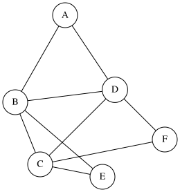
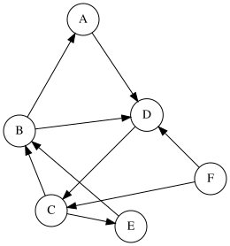

Definitions¶

A graph is a structure amounting to a set of vertices connected by edges. Formally:
class Graph:
def __init__(self):
self.vertices = {} # Finglish comment (no change)
self.edges = [] # لیست یالها (Persian comment - translate)
def add_edge(self, u, v):
# در صورت وجود رأس، یال اضافه کن (Persian comment - translate)
if u in self.vertices and v in self.vertices:
self.edges.append((u, v))
A simple graph prohibits loops and multiple edges between vertices. In contrast, a multigraph allows them.
Definition 3.1.1 (Directed Graph)¶
Suppose we have several cities connected by roads, and you are in city D and want to go to city A (Figure 1). To reach city A, we must traverse several roads, but since the roads can be one-way, we need a graph that shows the direction of each road, which we call a directed graph (Figure 2).
{kind=link}

{kind=link}

More precisely, a directed graph \(G\) is an ordered pair \((V, E)\) where \(V\) is the set of vertices. The set \(E\) contains ordered pairs of the form \((u, v)\), indicating a directed edge from \(u\) to \(v\) in the graph.
We call a directed graph \(G\) simple if it contains no multiple directed edges or loops. Note that \(G\) can be simple while \(E\) contains both \((u, v)\) and \((v, u)\), but it cannot have duplicate ordered pairs \((u, v)\).
Note: From this point forward, we will work with simple directed graphs. Unless explicitly stated otherwise, the term "directed graph" will refer to a simple directed graph.
درجه در گراف جهت دار¶
در یک گراف جهت دار، هر راس یک درجه ورودی و یک درجه خروجی دارد. برای مثال در شکل۲، درجه ورودی راس D برابر با ۳ و درجه خروجی آن برابر با ۱ است!
درجه ورودی راس \(v\) را با نماد \(d^{−}(v)\) یا \(deg^{−}(v)\) و درجه خروجی را با \(d^{+}(v)\) یا \(deg^{+}(v)\) نمایش میدهیم.
منظور از \(\delta^{+}, \delta^{-}\) به ترتیب مینیمم درجه ورودی و مینیمم درجه خروجی است.
به طور مشابه منظور از \(\Delta^{+}, \Delta^{-}\) به ترتیب ماکسیمم درجه ورودی و ماکسیمم درجه خروجی است.
Degree in Directed Graphs¶
In a directed graph, each vertex has an in-degree and an out-degree. For example, in Figure 2, the in-degree of vertex D is 3 and its out-degree is 1!
The in-degree of vertex \(v\) is denoted by the symbol \(d^{−}(v)\) or \(deg^{−}(v)\), and the out-degree is denoted by \(d^{+}(v)\) or \(deg^{+}(v)\).
The notation \(\delta^{+}, \delta^{-}\) refers to the minimum in-degree and minimum out-degree, respectively.
Similarly, the notation \(\Delta^{+}, \Delta^{-}\) refers to the maximum in-degree and maximum out-degree, respectively.
Cycles and Paths in Directed Graphs¶
Similar to simple graphs, in directed graphs, we have definitions such as walk, closed walk, trail, cycle, and path. For example, in Figure 2, a directed path could be a path like (D -> C -> B -> A) where the starting vertex is the origin (D) and the ending vertex is the destination (A). Note that when traversing edges, their direction must be respected. For example, when at vertex D, we cannot go directly to vertex A!
Additionally, a cycle in Figure 2 could be (D -> C -> B -> D). Obviously, when traversing a cycle, edge directions must be respected.
Similarly, the length of each of the above definitions equals the number of its edges.
More precisely:
Walk: A sequence \(v_{1}, v_{2}, ..., v_{l}\) is a walk in the directed graph \(G\) if for every \(1 \leq i < l\), the edge \((v_{i}, v_{i+1})\) exists in \(G\) (i.e., the edge belongs to the set \(E\)).
Closed Walk: If in the sequence we defined, \(v_{1} = v_{l}\), we call this walk a closed walk.
Trail: If in the sequence we defined, there are no repeated edges, we call this walk a trail.
Path: If in the sequence we defined, there are no repeated vertices (and consequently no repeated edges), the resulting walk is a path.
Cycle: Finally, if in a path, the starting and ending vertices are the same ( \(v_{1} = v_{l}\) ), we call the resulting walk a cycle.
Note that these definitions are exactly like those in simple graphs, with the difference that in directed graphs, edge directions must be correctly followed!
Theorems and Lemmas Used in This Section¶
Theorem 3.1.2¶
Theorem Statement: In a directed graph \(G\), we have \(\sum d^{-}(v) = \sum d^{+}(v)\)
Proof: The proof of this theorem is simple (this theorem is similar to the evenness of the sum of degrees in a simple graph). Consider any edge in this graph: it adds one outgoing degree to the starting vertex and one incoming degree to the ending vertex. Consequently, one unit is added to the right side of the equality and one unit to the left side of the equality!
Theorem 3.1.3¶
Statement of the Theorem: In a directed graph \(G\), if every vertex has an out-degree (or in-degree) of at least 1, then the graph contains at least one directed cycle.
Proof of the Theorem: This theorem is analogous to the case of simple graphs where every vertex has a degree of at least 2. Consider the longest path in the graph.
Suppose this longest path is \(v_1, v_2, ..., v_l\). By definition, the length of this path is \(l-1\).
Now consider vertex \(v_l\). Since this vertex has an out-degree of at least 1, there exists a vertex \(x\) such that there is a directed edge from \(v_l\) to \(x\). Moreover, vertex \(x\) cannot lie outside this path (Why?).
Therefore, vertex \(x\) must be one of the vertices in the path. Let \(x = v_j\) for some \(j\).
Consequently, the sequence \(v_{j}, v_{j+1}, ..., v_{l}, v_{j}\) forms a directed cycle!
Theorem 3.1.4¶
Theorem Statement: In a directed graph \(G\), if every vertex has an out-degree (or in-degree) of at least \(k\), then the graph contains a cycle of length at least \(k+1\).
Proof: This theorem generalizes Theorem 3.1.2. Its proof follows a similar approach to Theorem 3.1.2.
Consider the longest path in \(G\). Suppose the sequence of vertices is \(v_1, v_2, \ldots, v_l\).
We claim that \(l > k\) (i.e., the length of the longest path is at least \(k\)).
The proof of this claim is straightforward. Observe that vertex \(v_l\) has at least \(k\) outgoing edges. All vertices adjacent to \(v_l\) (those receiving an edge from \(v_l\)) must lie within this longest path (Why?). Thus, the longest path contains at least \(k+1\) vertices (including \(v_l\) and its \(k\) neighbors).
Now, consider the smallest index \(j\) such that there is an edge from \(v_l\) to \(v_j\) (i.e., we select the leftmost vertex in the path to maximize the cycle length). The cycle formed is \(v_j, v_{j+1}, \ldots, v_l, v_j\). We assert that the length of this cycle is at least \(k+1\) (Why?).
A Few More Definitions¶
Underlying Graph:
If we remove the directions from the edges of a directed graph, the resulting graph is called the underlying graph. For example,  is the underlying graph for
is the underlying graph for  .
.
This book is made by The Shaazzz contributors.
It is publicly available with cc-by-sa license.
Last updated at اوت 27, 2025.
Rendered by Sphinx (4.3.2) and Minoo theme (Beta 0.9.7).